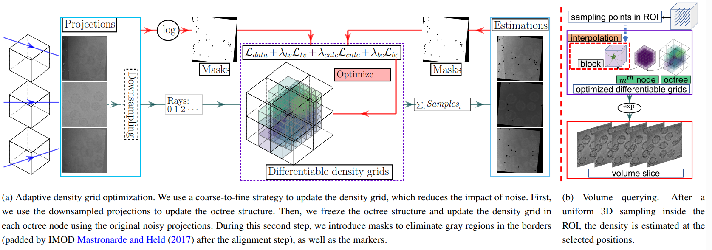

Adaptive Differentiable Grids for Cryo-Electron Tomography Reconstruction and Denoising
Yuanhao Wang, Ramzi Idoughi, Darius Rückert, Rui Li, Wolfgang Heidrich
Bioinformatics Advances

Our workflow contained two steps, the first is the training part to generate continuous differentiable density grids, and the second part is to query the
densities in the Region Of Interest (ROI).
Abstract
Motivation: Tilt-series cryo-Electron Tomography is a powerful tool widely used in structural biology to study three-dimensional structures of micro-organisms, macromolecular complexes, etc. Still the reconstruction process remains an arduous task due to several challenges: The missing-wedge acquisition, sample misalignment and motion, the need to process large data, and especially a low signal-to-noise ratio (SNR).
Results: Inspired by the recently introduced neural representations, we propose an adaptive learned-based representation of the density field of the captured sample. This representation consists of an octree structure, where each node represents a 3D density grid optimized from the captured projections during the training process. This optimization is performed using a loss that combines a differentiable image formation model with different regularization terms: total variation, boundary consistency, and a cross-nodes non-local constraint. The final reconstruction is obtained by interpolating the learned density grid at the desired voxel positions.
The evaluation of our approach using captured data of viruses and cells shows that our proposed representation is well-adapted to handle missing-wedges, and improves the SNR of the reconstructed tomogram. The reconstruction quality is highly improved in comparison to the state-of-the-art methods, while using the lowest computing time footprint.
Paper
Paper [Wang2023AdaptiveDiffGrids.pdf (~23.2MB)]
Supplement [Wang2023AdaptiveDiffGrids_supp.pdf (~20.6MB)]
Code and Datasets
Source code shared on [Github]
Datasets from the [EMPIAR (the Electron Microscopy Public Image Archive)]
Acknowledgement
This work was supported by King Abdullah University of Science and Technology as part of VCC Center Competitive Funding.
Citation
@article{wang2023adaptive,
title={Adaptive Differentiable Grids for Cryo-Electron Tomography Reconstruction and Denoising},
author={Wang, Yuanhao and Idoughi, Ramzi and R{\"u}ckert, Darius and Li, Rui and Heidrich, Wolfgang},
journal={Bioinformatics Advances},
pages={vbad131},
year={2023},
publisher={Oxford University Press}
}